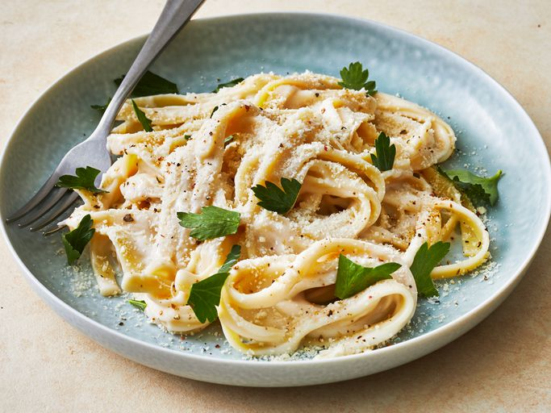

fettuccine-alfredo recipe

Ingredients
- 12 oz fettucine pasta
- 4 tbsp unsalted butter
- 3 cloves garlic, minced
- 1 1/2 cups heavy cream
- 1 cup freshly grated parmesan cheese
- salt & pepper, to taste
- fresh parsley, chopped
Instructions
- Cook the Fettucine
- Bring a large pot of salted water to a boil. Add the fettuccine and cook according to package instructions until al dente.
- Reserve ½ cup of pasta water, then drain the pasta and set it aside.
- Prepare the Sauce
- In a large skillet over medium heat, melt the butter.
- Add the minced garlic and saute for 1-2 minutes until fragrant (do not let it brown).
- Add the Cream
- Slowly pour in the heavy cream while stirring. Let it simmer gently for 3-4 minutes, allowing it to slightly thicken.
- Add the Parmesan
- Reduce the heat to low. Gradually stir in the grated Parmesan cheese, a little at a time, until melted and smooth.
- If the sauce is too thick, add a splash of the reserved pasta water to loosen it.
- Combine Pasta and Sauce
- Toss the cooked fettuccine in the skillet with the alfredo sauce. Stir well to coat the pasta evenly.
- Season and Serve
- Season with salt and freshly ground black pepper to taste.
- Garnish with chopped parsley and extra Parmesan cheese, if desired.